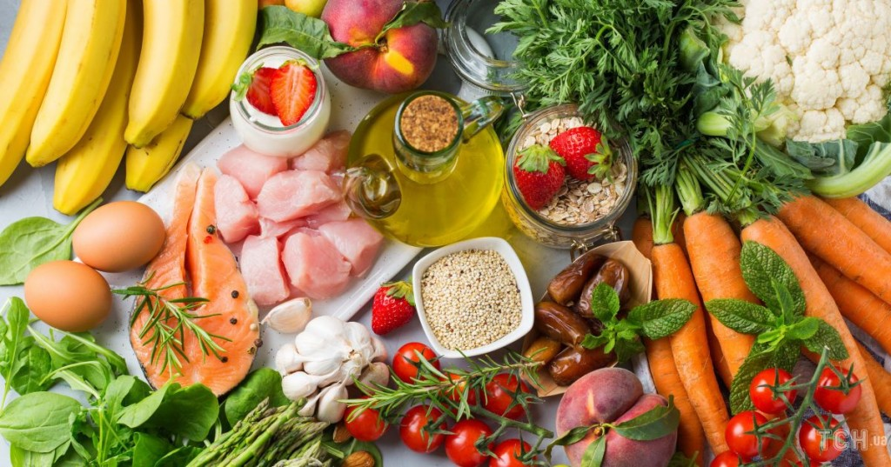
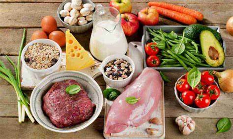
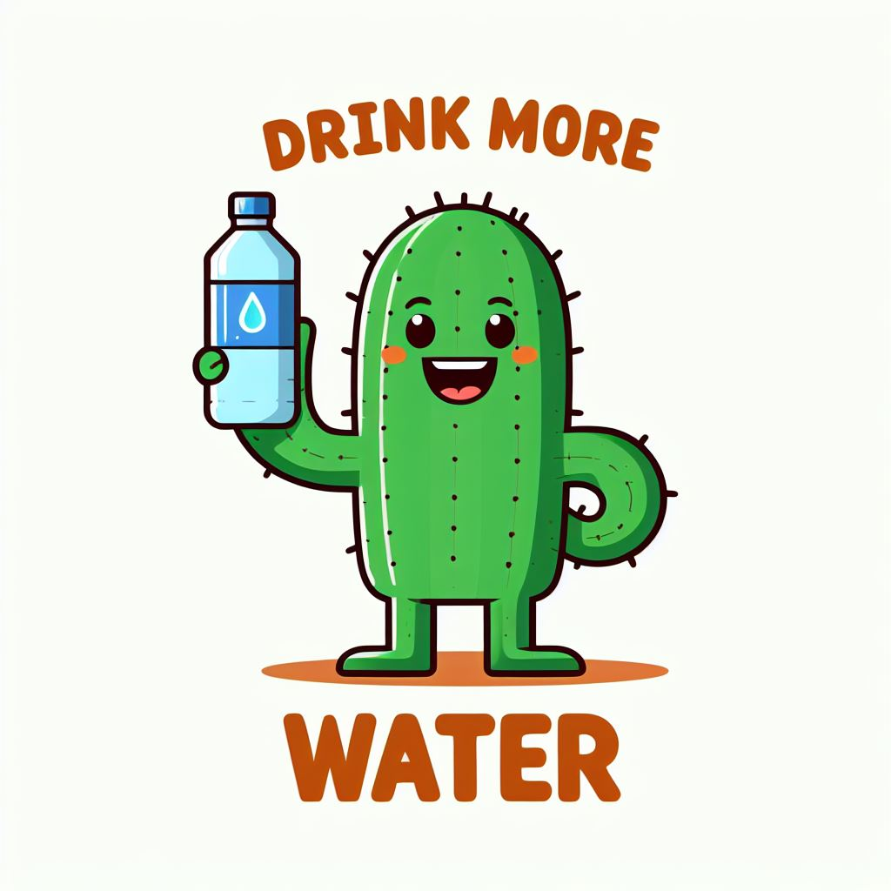

Здорове харчування не обов'язково пов'язане з великими витратами часу і грошей. Малі зміни в щоденному раціоні можуть призвести до значущого покращення вашого здоров'я. Вотримуйтеся простих порад, щоб зробити ваше харчування більш збалансованим та корисним.
Не обмежуйте себе лише кількома продуктами. Спробуйте включити в раціон різні фрукти, овочі, бобові, ягоди, горіхи та зерна. Таким чином, ваш організм отримає всі необхідні вітаміни та мінерали.
Готування вдома дозволяє вам контролювати інгредієнти та економити кошти. Спробуйте прості та швидкі рецепти, додаючи свіжі інгредієнти та обмежуючи вміст цукру та солі.
Вода - це найкращий напій для вашого здоров'я. Замініть солодкі напої на воду та додайте туди фрукти чи трави для смаку. Вода допомагає виводити токсини та забезпечує енергією.
Визначте правильний розмір порцій та утримуйтеся від переїдання. Це допоможе уникнути зайвої ваги та підтримувати здоровий стан.
.jfif)
Спробуйте зменшити споживання оброблених продуктів, які часто містять багато цукру, солі та трансжирів. Оберіть свіжі та натуральні альтернативи.
Зробіть ці невеликі зміни у своєму харчуванні, і ви відчуєте великі вигоди для вашого здоров'я.
=======Шкільна їдальня грає важливу роль у формуванні здорового способу життя учнів. Забезпечення дітей ситними та корисними стравами впливає на їх фізичне здоров'я та успішне навчання.
Ключова складова здорового харчування - різноманітність. Шкільна їдальня повинна пропонувати різноманіття продуктів для необхідного комплексу вітамінів та мінералів.
Важлива якість приготовлених страв та використання здорових методів готування. Це гарантує найбільшу користь від кожного прийому їжі.
Контроль розмірів порцій - ключовий аспект. Відповідність порцій рекомендаціям допомагає уникнути переїдання та зберігає здоров'я.
Освіта учнів щодо здорового харчування також важлива. Важливо вчити дітей обирати здорові продукти та розуміти значення різноманітності.
Шкільна їдальня - не лише місце для перекусу, але і ключовий чинник у формуванні здорових звичок та забезпеченні енергії для успішного навчання.
>>>>>>> 520055665af71d310d8b6dd82a0868ee789c2a45